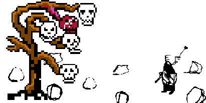

Hello and welcome!
To do:
Update README.md of banba3 git repo with comics, statistics and screenshots.
Make it inviting for non Irish-speakers
and people entirely new to software development.
Lay out in entertaining detail
the rise of Irish online
and the challenge of Irish online and within.
But
also to do:
Update Banba project with Easca keyboard and update Easca with links menu.
It's time to push this project out the door and start again with smaller more carefully planned elements.
3 things I can't quite bring myself to abandon yet:
- Easca keyboard needs to be connected to button A (and button B translate functionality transferred to button select; and button B toggle en-garde mode);
-
A btn toggle Easca keyboard if !en-garde, else attack;
-
and then some dialogue with Geaga.

I'll comment here again in a few weeks when those 3 tasks (plus a little visual polish for each UI button component press and release) are done. Then I'll update the
Banba README.md with the plan
and the new To Do.
Ribo Macribo
Montag 31 Mai 2021
@
/r/banba